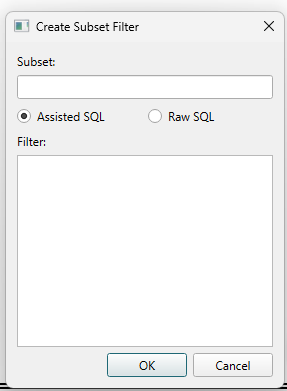

Filtering and Querying¶
Poriscope supports two modes for filtering event data: Assisted SQL and Raw SQL. Both modes are available in any tab that supports filters, including the MetaData Tab.
Filters can be saved to a JSON file and reloaded in future sessions using the Save Filter and Load Filter buttons. See Saving and Loading Filters. The mode you choose at creation time is permanent and encoded directly in the filter name.

Filter Modes¶
Assisted SQL¶
In Assisted SQL mode, you write only the WHERE clause condition. Poriscope constructs the full SQL query automatically, handling column qualification, table joins, and experiment/channel scoping. You do not control which columns are returned or how the query is structured (Poriscope decides that based on what axes you select in the UI).
Use this mode for most everyday filters, and if you are not familiar with SQL
()no SQL knowledge is required, just simple conditions like duration > 100).
Example 1 — Long events only:
Filter: duration > 100
Then select Histogram, x-axis: duration → histogram of events longer than 100 µs.
Example 2 — High blockage events:
Filter: max_blockage > 2000
Then select Scatterplot, x-axis: duration, y-axis: max_blockage → scatter of high-blockage events.
Example 3 — Multi-sublevel events with significant blockage:
Filter: num_sublevels >= 3 and max_blockage > 1500
Then select Histogram, x-axis: fitted_ecd → distribution of ECD for complex events.
Example 4 — Cross-table filter (join handled automatically by Poriscope):
Filter: sublevel_duration > 200
Then select Histogram, x-axis: duration → returns the duration of events
that contain at least one sublevel longer than 200 µs. Poriscope detects that
sublevel_duration belongs to the sublevels table and automatically joins it
with the events table to apply the filter.
Example 5 — Filter by a property of the experiment:
Filter: voltage > 50
Then select Histogram, x-axis: duration → events from the experiments run above
50 mV. Poriscope joins the experiments table automatically, the same way it joins
sublevels in Example 4.
Example 6 - Subquery, including aggregation:
A subquery is passed through exactly as you type it, so it can do things the filter
itself cannot. Qualify any reference to the outer row yourself - e.id for the event.
Filter: e.id IN (SELECT event_db_id FROM sublevels WHERE filtered = 5)
Then select Histogram, x-axis: duration -> events with at least one sublevel
whose filtered value is 5. Note that the filter filtered = 5 says the same thing
more simply, because Example 4’s automatic join already means “at least one sublevel
matches”.
Filter: e.id IN (SELECT event_db_id FROM sublevels GROUP BY event_db_id HAVING COUNT(*) > 3)
Then select Histogram, x-axis: duration -> events with more than 3 sublevels,
which is the aggregation the note above says the filter itself cannot express.
Saved as: <subset_name>_assisted
Note
Assisted mode handles cross-table filters automatically but cannot put a
GROUP BY or HAVING on the query itself, and cannot return computed
columns (e.g., max_blockage - min_blockage AS blockage_range). Use Raw SQL
for those cases. Aggregation inside a subquery does work - see Example 6.
Text compared against a column is left exactly as you type it, so
sequence = 'duration' matches the literal value duration and is not
confused with the duration column. A subquery is left alone the same way:
it names its own tables, so its column references are never rewritten against
the outer query’s, and a reference to the outer row has to be qualified by you.
id on its own is rejected, because every table has one and they mean different
rows. Write e.id for an event, s.id for a sublevel or exp.id for an
experiment. experiment_id, channel_id and event_id need no qualifier -
they mean the same thing in every table.
Raw SQL¶
In Raw SQL mode, you write a complete SELECT statement. Poriscope executes it against the SQLite database without rewriting or modifying the query content.
You have full control over which columns are returned and how the query is structured.
Use this mode when you need aggregations, computed columns, or simply prefer writing complete SQL queries directly.
Example 1 — Same long events filter, written as Raw SQL:
SELECT duration FROM events WHERE duration > 100
Then select Histogram, x-axis: duration.
Example 2 — Same high blockage scatterplot, written as Raw SQL:
SELECT duration, max_blockage FROM events WHERE max_blockage > 2000
Then select Scatterplot, x-axis: duration, y-axis: max_blockage.
Example 3 — Same multi-sublevel filter, written as Raw SQL:
SELECT fitted_ecd FROM events
WHERE num_sublevels >= 3 AND max_blockage > 1500
Then select Histogram, x-axis: fitted_ecd.
Example 4 — Same cross-table filter, written as Raw SQL:
SELECT duration FROM events
WHERE id IN (
SELECT event_db_id FROM sublevels
WHERE sublevel_duration > 200
)
Then select Histogram, x-axis: duration.
Example 5 — Aggregation: filter by sublevel count (not possible in Assisted):
GROUP BY groups all sublevel rows by their parent event. HAVING COUNT(*) > 3
then keeps only events that have more than 3 sublevel rows.
SELECT duration FROM events
WHERE id IN (
SELECT event_db_id FROM sublevels
GROUP BY event_db_id
HAVING COUNT(*) > 3
)
Then select Histogram, x-axis: duration.
You can also aggregate a sublevel property per event and filter on that:
SELECT duration FROM events
WHERE id IN (
SELECT event_db_id FROM sublevels
GROUP BY event_db_id
HAVING AVG(sublevel_duration) > 150
)
Then select Histogram, x-axis: duration.
Example 6 — Computed columns (not possible in Assisted):
A computed column is derived from existing columns using arithmetic. It is defined
in the SELECT with expression AS column_name and can then be used as a plot axis.
Blockage range — difference between maximum and minimum blockage:
SELECT duration, max_blockage - min_blockage AS blockage_range FROM events
Then select Scatterplot, x-axis: duration, y-axis: blockage_range.
Fractional blockage — blockage normalised to baseline current:
SELECT duration, max_blockage / ABS(baseline_current) AS fractional_blockage FROM events
Then select Histogram, x-axis: fractional_blockage.
Saved as: <subset_name>_raw
Warning
Raw SQL filters must begin with SELECT. Entering a WHERE clause in Raw SQL mode
(e.g., duration > 100) will be rejected with an error message.
Note
In Raw SQL mode, only the columns you explicitly include in your SELECT statement
will be available for plotting. For a scatterplot of duration vs max_blockage,
both columns must appear in the SELECT:
SELECT duration, max_blockage FROM events WHERE max_blockage > 2000
Note
Computed columns in Raw SQL must be aliased to an existing database column name to be selectable as a plot axis. For example:
SELECT duration, max_blockage - min_blockage AS max_blockage FROM events
Aliases that do not match an existing column name (e.g. AS blockage_range)
will not appear in the axis dropdown and cannot be plotted.
Creating a Filter¶
Click the ➕ button next to the Filter dropdown.
Enter a name for the filter.
Select the mode using the Assisted SQL or Raw SQL radio buttons.
Enter the filter expression or query in the Filter field.
Click OK.
The filter is saved with a suffix indicating its mode (_assisted or _raw) and appears
in the filter dropdown immediately.
Note
The mode radio buttons are locked once a filter is created. To change mode, delete the filter and recreate it. This is by design — assisted filters contain WHERE clauses and raw filters contain complete SELECT statements. These formats are incompatible and cannot be safely converted.
Editing a Filter¶
Select exactly one filter from the filter dropdown.
Click the pencil (edit) icon.
Update the name or filter text as needed.
Click OK.
The mode (Assisted or Raw) is shown but cannot be changed during editing.
Warning
For Raw SQL filters, the updated text must still begin with SELECT or the edit
will be rejected.
Saving and Loading Filters¶
Filters can be saved to a JSON file and reloaded in future sessions.
Save Filter: Exports all current filters to a
.jsonfile. Both_assistedand_rawfilters are included.Load Filter: Imports filters from a
.jsonfile. Raw filters are restored directly without re-validation. Assisted filters are re-validated against the database before being added.
The saved JSON format looks like:
{
"long_events_assisted": "duration > 100",
"multi_sublevel_raw": "SELECT duration FROM events WHERE id IN (SELECT event_db_id FROM sublevels GROUP BY event_db_id HAVING COUNT(*) > 3)"
}
Note
If any filter name in the file conflicts with an existing filter, no filters from that file will be loaded.
Common Mistakes¶
Mistake |
Result |
|---|---|
WHERE clause entered in Raw SQL mode |
Rejected at creation — must start with SELECT |
Full SELECT entered in Assisted mode |
Fails validation — treated as a WHERE clause |
Raw scatterplot missing a selected column |
Plot fails with “column not present” error |
Typo in column name |
Validation error |
|
Empty result - use |
Available Columns¶
The columns available for filtering depend on the loaded database. Columns present in the YouTube tutorial database are listed below as a reference (see Running the Software).
events table:
duration— event duration in µsstart_time— event start time in µsfitted_ecd,raw_ecd— equivalent charge displacementmax_blockage,min_blockage— maximum and minimum current blockage in pAmax_blockage_duration,min_blockage_duration— duration of max/min blockage levels in µsmax_deviation,max_deviation_duration— maximum deviation from baselinebaseline_current,baseline_stdev— baseline current in pA and its standard deviationnum_sublevels— number of detected sublevels within the eventcluster_label,cluster_confidence— clustering results if committed
sublevels table:
sublevel_duration— duration of the sublevel in µssublevel_current— current during the sublevel in pAsublevel_blockage— blockage magnitude of the sublevel in pAsublevel_stdev— standard deviation of current within the sublevelsublevel_fitted_ecd,sublevel_raw_ecd— sublevel-level ECD valuessublevel_start_times,sublevel_end_times— sublevel time boundaries in µs
Tip
To inspect your database structure directly, use a SQLite browser such as DB Browser for SQLite.
Note
Tutorial Data
The data used in the YouTube tutorial series is archived on the Federated Research Data Repository (FRDR):
DOI: 10.20383/103.01695
The full dataset is ~9.92 GB. Individual .log and .json files can be downloaded separately from the FRDR page if you only need specific channels.
The deposit also contains the reference SQLite databases used in the tutorial (.sqlite3), and a README.txt giving the parameters needed to regenerate them from the recordings.